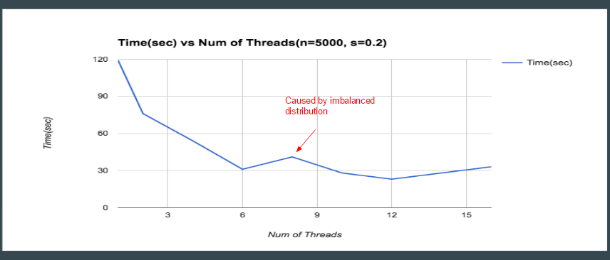
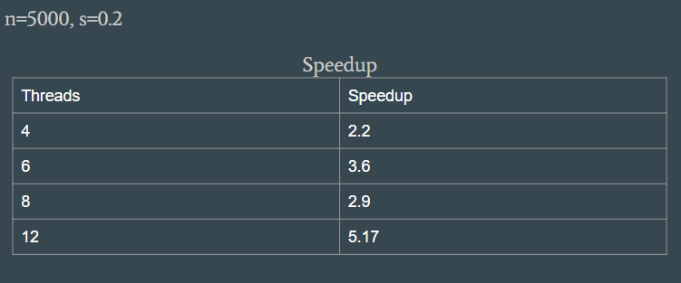

Summary
For our project, we implemented a sequential and a parallel Cholesky Factorization using OpenMP. We were able to obtain a speedup of 5.17 running on a machine with 6 cores and two-way hyper threading.
Background
The purpose of our project was to optimize the heat method for calculating geodesic distances by parallelizing it. After reviewing the given code base for the heat method, we discovered that that there are three main steps (I) solving a Heat Equation, (II) Normalizing the Gradient, and (III) solving a Poisson Equation. Not only are these three steps inherently sequential but the second step contained a lot of sequential dependencies. However, the two remaining steps are simply solving a linear equation. Thus, our focus shifted into writing an efficient linear solver.
After reading the research paper by Crane, we learned that steps I and II use symmetric positive definite(SPD) matrices to represent the data. After more research, we discovered that for SPD matrices the best way to write a linear solver is using the Cholesky Factorization. The Cholesky Factorization decomposes a Matrix A into LL^T where L is a lower triangle matrix and L^T is the transpose. Therefore, we can easily solve the linear system by just using forward-substitution and backward-substitution.
One important data structure we had to improve performance dealt with how we represented a our sparse symmetric matrix. A symmetric matrix only needs to be represented by the values on or below the diagonal since the values on the upper half are the same. Furthermore, the high amount of zeros means we do not need to store every single 0 in order to be able to discern our matrix. Rather, we create a data structure that models a row as the nonzero elements of the row before the diagonal paired with the corresponding column indices and we do the same but vice versa with the columns. This data structure allows us to iterate over whole column in time equivalent to the sparsity of that column, often reducing the size by at least a half and more likely greater.
Approach
The algorithm for performing the Cholesky Factorization sequentially is straightforward and simply requires applying multiple formulas to a cell based on if the cell is diagonal or not. However, for the parallel implementation we used a technique called a Fan-In Algorithm.
For this approach we used a GHC machine with 6 cores and 2-way hyper threading. More generally, the approach targeted multi core cpu machines. We used OpenMP at certain points to help facilitate parallelism. The algorithm we imposed is known as a fan-in column cholesky factorization. This means that the majority of the computation is done by the individual senders rather than the receiver, and that the factorization is computed by column (rather than say by row or submatrix). In our domain, we noticed that the matrices we would be dealing have the SPD(Sparse Postive Definite) property.
An optimization that was made due to the sparsity of the matrix, is that we avoided computations of many update vectors as often times we add to the update vector a multiple of a column based on a specific entry. If that entry is a 0 then we can forgo the computation of the rest of the column. This happens more often the sparser the matrix is. At a high level, a cholesky factorization requires making an update to each column, sequentially, based on all of its previous column’s computations. This creates a large sequential chain at the core of the dependency. So how do we combat this and where do we achieve parallelism? An important observation is that in order to compute column i, there exists a unique linear combination of columns 0 through i-1 that creates an update vector that can be used to compute column i. Thus, we have a potentially large amount of read-only columns here, but only one that needs access to write. Having seen this, we decided to assign every column to a thread statically by giving thread i all the columns where col % MAX_THREADS == i. Then when computing the cholesky-factorization for a column, we compute an aggregate update vector for each thread’s locally responsible columns. We can do this since the update vector’s are added together and addition has the commutative/associative properties.
Now that each thread has computed its contribution towards the result, we need to send the information to the owner of the column for final computation. We do this by adding update vectors to a global taskqueue from sending threads and then having the appropriate receiving thread read from the queue and use those vectors to compute the final answer for the column at hand. Now we have parallelized the computation for a single column, but still have the issue that each column must be computed one after another still. One solution was to add a barrier for synchronization, but we knew that would only preserve the sequential part. Instead we carefully investigated the ordering of our algorithm. We found that if a column j > i starts computing before i, j will be sitting in the wait phase until i finishes up anyways, meaning j won’t be using an old copy of i when computing.
In order to put the algorithm into code, we had a function that ran over all the threads that computed update vectors over all iterations for locally accessible columns. We then used openmp to spawn threads where each thread called this computation function. The key difference between threads is that the behavior significantly varies depending on if the thread is responsible for the write of the current iteration, as one thread handles reception of data while the rest send and move on. For the cholesky factorization, we did not start with any code and wrote the implementation from scratch including all necessary data structures or helper functions.
Results
In order to to test the performance of our application, we used a matrix of dimensions 5000 x 5000 and sparsity of 0.2. Sparsity of 0.2 implies that the matrix should have approximately 20% non-zero values. Note we choose a matrix of this property since it resembles the type of matrices used in the heat method.

The graph above shows the total time it took the parallel algorithm to compute a decomposition based on the number of threads. We tested the system on GHC 26 machine which has 6 cores and supports two way hyper threading. As expected, as the number of threads increases, the latency of the factorization generally decreases. Note that however, we do get a drop off in performance when moving from 6 cores to 8 cores. The cause of this stems from the fact that the machine has 6 cores. Therefore, when the mapping of threads to cores occurs, with 8 threads we end up having two cores having to deal with two threads each while the other 4 cores only have one thread each mapped to them. Thus, this imbalance of work causes the program to drop in performance. However, we do get a performance gain with 10 cores since we split up the work more evenly. Consequently, with 12 threads we obtain optimal performance since we take complete advantage of the underlying machine.

The table above shows the speedup we achieved with our parallel implementation. With 12 threads we were able to achieve 5.17 speedup. Indeed we can get better results if we optimized more, but we are satisfied by the results. The main challenge with the Cholesky Factorization is that it is a very memory intensive program. It does little computation but performs a lot of data movement. The roots from the fact that there are a lot of dependencies. To calculate certain columns of the matrix, we need to information from previous columns. So what happens is that dependency requires lots of communication. When a thread computes a column, it has to relay that information to all the dependent columns. Thus, we our application was bottlenecked by communication. In order to preserve data integrity, we had to synchronize on the communication which resulted in a huge overhead.
Refrences
Crane, Keenan. Geodesics in Heat: A New Approach to Computing Distance Based on Heat Flow. Rep. Caltech, n.d. Web.
Heath, Michael. Heat PARALLEL DIRECT METHODS FOR SPARSE LINEAR SYSTEMS. University of Illinois, n.d. Web.